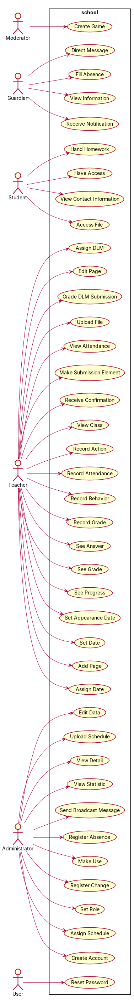
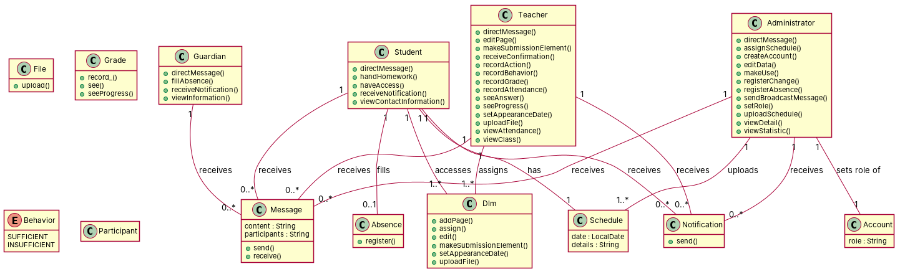

R1: As a guardian, I want to directly message any teacher of my child, the mentor assigned to my child, or an administrative staff member, so that I can contact them when needed. R2: As a guardian, I want to fill in an absence of my child, so that administrative staff is aware that my child will not attend school today. R3: As a guardian, I want to receive a notification when I receive a message, so that I do not have to manually check for new messages. R4: As a guardian, I want to view any information related to my children, so that I can gain insight into their behavior and performance. R5: As a student, I want to access files and Digital Learning Module (DLM) in the Learning Management System (LMS) that have been assigned to the class that I participate in, so I am able to work with the material. R6: As a student, I want to directly message any of my teachers, so that I can directly communicate with them when needed. R7: As a student, I want to directly message my mentor, so that I can directly communicate with my her when needed. R8: As a student, I want to hand my homework to the DLM when they are finished, so that the teacher is able to see my work. R9: As a student, I want to have access to an up-to-date timetable, so that I always know for sure that I am in the correct place at a certain time. R10: As a student, I want to have access to DLM, so that I can do the work that is expected of me. R11: As a student, I want to receive a notification when an assignment is due soon and I have not completed it yet, so that I can complete it prior to the due date. R12: As a student, I want to receive a notification when I receive a message, so that I do not have to manually check for new messages. R13: As a student, I want to receive a notification when new files have been made available through the LMS, so that I am always up to date with the uploaded files. R14: As a student, I want to receive a notification when something changes within my timetable, so that I am notified of any changes in the timetable in a timely manner. R15: As a student, I want to view any information related to my account, so that I can gain insight into my performance and behavior. R16: As a student, I want to view the contact information of students attending my classes, so that collaboration is made possible. R17: As a student, once I am 18 years old I want to change my preferences in regard to data being shared with coupled guardians, so that I have a say in what can be accessed by my guardians. R18: As a teacher I want to receive a notification when a student has uploaded a submission onto the LMs, so that I do not have to manually check to see if a student has submitted work. R19: As a teacher I want to receive a notification when something changes within my timetable, so that I am notified of any changes regarding the timetable in a timely manner. R20: As a teacher, I want to add a page containing a video to a DLM, so that video material can be used within a DLM. R21: As a teacher, I want to add a page containing text and pictures to a DLM, so that this material can be used within a DLM. R22: As a teacher, I want to add a page that contains a multiple-choice question or an open question to a DLM, so that I can test the student's knowledge. R23: As a teacher, I want to assign a DLM to a specific class or student(s), so that the DLM is accessible by the right user. R24: As a teacher, I want to assign a due date to a DLM, so that students can be informed about when they are expected to finish a DLM. R25: As a teacher, I want to automatically grade DLM submissions, where possible, when I have submitted all the answers, so that I do not have to manually correct all questions within a DLM. R26: As a teacher, I want to create digital learning modules containing pages, so that I can create interactive study material. R27: As a teacher, I want to directly message any student that is assigned to my class, so that I am able to have contact with any participants of my class. R28: As a teacher, I want to directly message any student to which I am assigned mentor, so that I can gain insight into the performance of my students. R29: As a teacher, I want to edit any page contained within a DLM, so that I do not have to create a new DLM if the need arises to change a minor detail. R30: As a teacher, I want to make submission elements, so that students can submit assignments that they have made. R31: As a teacher, I want to optionally add the corresponding answer to a question page contained within a DLM, so that it can be used to correct a submitted DLM. R32: As a teacher, I want to receive a confirmation from the LMS system once files have been fully uploaded, so that I do not have to check if any uploads have failed. R33: As a teacher, I want to receive a notification when a student that I mentor is sent out of class, so that I am informed about the behavior of my students. R34: As a teacher, I want to receive a notification when I receive a message, so that I do not have to manually check for new messages. R35: As a teacher, I want to record disciplinary actions for a student such as: missed homework, no books, or sent out, so that rules that are set about these measures can be policed by administrative staff and that guardians, teachers, and mentors can gain insight. R36: As a teacher, I want to record either a sufficient or insufficient a student's behavior every single academic period, so that other users can gain insight into their behavior. R37: As a teacher, I want to record grades for a student, so that they can be informed about their performance. R38: As a teacher, I want to record the attendance of students within my class, so that any students skipping class can be detected. R39: As a teacher, I want to see the answers submitted by individual students within the corresponding DLM, so that I can gain insight into their submissions. R40: As a teacher, I want to see the average grade that students received last year, starting when they are in their second year, so that I am able to gain insight into the class' prior performance. R41: As a teacher, I want to see the progress that an individual student has made within a DLM, so that I can gain insight into their performance. R42: As a teacher, I want to set an appearance date to a DLM, so that students are only able to access the DLM after the appearance date has passed. R43: As a teacher, I want to set available dates and times either to instant or a specific date and time combination, so that I am able to upload the material in advance. R44: As a teacher, I want to upload files to the LMS page of one or multiple classes, so that students can download and access the files. R45: As a teacher, I want to view the attendance, grades that are obtained this year (including behavioral marks), personal details, and disciplinary actions of (any student in my class) or (any student that I am assigned to as mentor), so that I can gain insight into their performance. R46: As a teacher, I want to view who is in a specific class that is mentioned in my timetable, so that I can gain insight into whom can be expected to attend the class. R47: As a user, I want to reset my password on request once I supply my previous password, so that I can uphold safety standards. R48: As an administrator I want to send direct messages to any student, guardian, teacher, or administrator, so that I am able to quickly contact them if needed. R49: As an administrator, I want to assign schedules to groups of students (classes) or teachers, so that these schedules are accessible by the correct student(s) or teacher. R50: As an administrator, I want to create an account, so that I can facilitate access to the system for users. R51: As an administrator, I want to edit the personal data of an account, so that the information associated to this account is linked to the correct identity. R52: As an administrator, I want to make use of various filters and viewpoints, ch
Red, struck-through: removed by ambiguity removal; green: added.
| actors (5 → 5) |
|---|
| administrator |
| guardian |
| student |
| teacher |
| user |
| StudentS |
| classes (40 → 37) |
|---|
| Absence |
| AbsenceForm |
| Access |
| Account |
| Action |
| Administrator |
| Answer |
| AppearanceDate |
| Assignment |
| Attendance |
| Behavior |
| Change |
| Child |
| Date |
| Dlm |
| File |
| Grade |
| Guardian |
| Homework |
| Insight |
| Lms |
| Manner |
| Material |
| Mentor |
| Message |
| Notification |
| Participant |
| Performance |
| Question |
| Schedule |
| School |
| Staff |
| Student |
| StudentS |
| Submission |
| Teacher |
| Timetable |
| User |
| Work |
| Year |
| attributes (4 → 4) |
|---|
| Account.role |
| Student.contact information |
| Student.group |
| Student.knowledge |
| relations (15 → 15) |
|---|
| association: Student -> Work |
| has: Child -> Absence |
| has: Child -> Behavior |
| has: Child -> Teacher |
| has: Student -> Absence |
| has: Student -> Action |
| has: Student -> Attendance |
| has: Student -> Behavior |
| has: Student -> Performance |
| has: Student -> Schedule |
| has: Student -> Submission |
| has: Student -> Year |
| has: User -> Absence |
| has: User -> Behavior |
| has: User -> Performance |
Enumerations added: Behavior {sufficient, insufficient}
| id | req | type | cue | status | readings / explanation |
|---|---|---|---|---|---|
| A1 | R1 | coordination | noun or noun | resolved | any teacher; the mentor assigned to my child; an administrative staff member The phrase 'any teacher of my child, the mentor assigned to my child, or an administrative staff member' could be interpreted as a list of options or as a single role that could be any of the three. |
| A2 | R1 | quantifier | any | rejected | any; all The use of 'any' in the context of teachers does not change the meaning significantly and is likely to be interpreted as 'all' teachers. |
| A3 | R4 | quantifier | any | resolved | any information; specific information The phrase 'any information related to my children' could be interpreted as all or specific information. |
| A4 | R4 | incompleteness | information | resolved | information; specific details The phrase 'information related to my children' is incomplete and could refer to all or specific details. |
| A5 | R6 | quantifier | any | resolved | any of my teachers; specific teachers The phrase 'any of my teachers' could be interpreted as all or specific teachers. |
| A6 | R9 | incompleteness | certain | resolved | certain; up-to-date The phrase 'up-to-date timetable' is incomplete and could be interpreted as 'certain' or 'up-to-date'. |
| A7 | R11 | referential | it | resolved | it; the assignment The phrase 'it' could refer to the assignment or the notification. |
| A8 | R11 | referential | it | resolved | it; the assignment The phrase 'it' could refer to the assignment or the notification. |
| A9 | R14 | quantifier | any | resolved | any; specific The phrase 'any information' could be interpreted as all or specific information. |
| A10 | R15 | quantifier | any | resolved | any information; specific information The phrase 'any information related to my account' could be interpreted as all or specific information. |
| A11 | R15 | incompleteness | information | resolved | information; specific details The phrase 'information related to my account' is incomplete and could refer to all or specific details. |
| A12 | R16 | incompleteness | information | resolved | information; specific details The phrase 'information related to my account' is incomplete and could refer to all or specific details. |
| A13 | R17 | actor | passive 'shared' without agent | resolved | passive 'shared' without agent; active 'shared' with agent The phrase 'passive 'shared' without agent' could be interpreted as the student sharing data with guardians or guardians sharing data with the student. |
| A14 | R19 | quantifier | any | resolved | any; specific The phrase 'any changes within my timetable' could be interpreted as all or specific changes. |
| A15 | R19 | actor | passive 'notified' without agent | resolved | passive 'notified' without agent; active 'notified' with agent The phrase 'passive 'notified' without agent' could be interpreted as the system notifying the teacher or the teacher being notified by the system. |
| A16 | R22 | coordination | noun or noun | resolved | a multiple-choice question; an open question The phrase 'a multiple-choice question or an open question' could be interpreted as either one or both. |
| A17 | R22 | quantifier | multiple | resolved | multiple; one The phrase 'multiple-choice question' could be interpreted as one or multiple questions. |
| A18 | R23 | coordination | noun or noun | resolved | a specific class; a student The phrase 'a specific class or student(s)' could be interpreted as either a class or students. |
| A19 | R27 | quantifier | any | resolved | any student; specific students The phrase 'any student that is assigned to my class' could be interpreted as all or specific students. |
| A20 | R28 | quantifier | any | resolved | any student; specific students The phrase 'any student to which I am assigned mentor' could be interpreted as all or specific students. |
| A21 | R29 | quantifier | any | resolved | any page; specific page The phrase 'any page contained within a DLM' could be interpreted as all or specific pages. |
| A22 | R29 | incompleteness | detail | resolved | detail; specific detail The phrase 'any detail' is incomplete and could refer to all or specific details. |
| A23 | R30 | referential | they | resolved | they; the students The phrase 'they' could refer to the students or the assignments. |
| A24 | R31 | referential | it | resolved | it; the question page The phrase 'it' could refer to the question page or the corresponding answer. |
| A25 | R32 | quantifier | any | resolved | any; specific The phrase 'any files' could be interpreted as all or specific files. |
| A26 | R35 | coordination | and+or | resolved | missed homework, no books, or sent out; missed homework, no books, or sent out as a single action The phrase 'such as: missed homework, no books, or sent out' could be interpreted as separate actions or a single action. |
| A27 | R36 | coordination | either/or | resolved | sufficient or insufficient; sufficient and insufficient The phrase 'either a sufficient or insufficient' could be interpreted as separate or combined behaviors. |
| A28 | R36 | incompleteness | sufficient | resolved | sufficient; sufficient and insufficient The phrase 'sufficient' is incomplete and could refer to either sufficient or insufficient behaviors. |
| A29 | R38 | quantifier | any | resolved | any; specific The phrase 'any attendance' could be interpreted as all or specific attendance records. |
| A30 | R39 | referential | their | resolved | their; the students The phrase 'their' could refer to the students or the individual students. |
| A31 | R43 | coordination | either/or | resolved | either instant or a specific date and time combination; both instant and a specific date and time combination The requirement suggests that the teacher can choose between setting the date and time as an instant or a specific combination, but it is not clear if both options are available. |
| A32 | R44 | coordination | and+or | resolved | upload to one class; upload to multiple classes The requirement indicates that the teacher can upload files to either one or multiple classes, but it is not clear if both options are mutually exclusive or if the teacher can choose between them. |
| A33 | R45 | referential | their | resolved | any student in the teacher's class; any student the teacher is assigned to The requirement is ambiguous regarding whether the teacher can view details of any student in their class or any student they are assigned to. |
| A34 | R45 | coordination | and+or | resolved | view details of any student in the teacher's class or any student the teacher is assigned to; view details of any student in the teacher's class or any student the teacher is assigned to, but not both at the same time The requirement is unclear if the teacher can view details of any student in their class or any student they are assigned to, and if both options are mutually exclusive. |
| A35 | R45 | quantifier | any | resolved | view details of any student in the teacher's class; view details of any student the teacher is assigned to The requirement is ambiguous regarding whether the teacher can view details of any student in their class or any student they are assigned to. |
| A36 | R45 | incompleteness | details | resolved | view details of any student in the teacher's class; view details of any student the teacher is assigned to The requirement is incomplete and does not specify whether the teacher can view details of any student in their class or any student they are assigned to. |
| A37 | R48 | coordination | noun or noun | resolved | send direct messages to students, guardians, teachers, or administrators; send direct messages to students, guardians, teachers, or administrators, but not all at the same time The requirement is ambiguous regarding whether the administrator can send direct messages to all types of users at the same time or if they must choose one type of user. |
| A38 | R48 | quantifier | any | resolved | send direct messages to any student, guardian, teacher, or administrator; send direct messages to any student, guardian, teacher, or administrator, but not all at the same time The requirement is ambiguous regarding whether the administrator can send direct messages to all types of users at the same time or if they must choose one type of user. |
| A39 | R48 | incompleteness | quickly | resolved | send direct messages to any student, guardian, teacher, or administrator; send direct messages to any student, guardian, teacher, or administrator, but not all at the same time The requirement is incomplete and does not specify whether the administrator can send direct messages to all types of users at the same time or if they must choose one type of user. |
| A40 | R49 | coordination | noun or noun | resolved | assign schedules to groups of students or teachers; assign schedules to groups of students or teachers, but not both at the same time The requirement is ambiguous regarding whether the administrator can assign schedules to groups of students or teachers, and if both options are mutually exclusive. |
| A41 | R51 | incompleteness | information | resolved | edit the personal data of an account; edit the personal data of an account, but not all at the same time The requirement is incomplete and does not specify whether the administrator can edit the personal data of an account at the same time. |
| A42 | R52 | coordination | and+or | resolved | make use of various filters and viewpoints, change the view of the visual dashboard to a specific class, year, period, or subject; make use of various filters and viewpoints, change the view of the visual dashboard to a specific class, year, period, or subject, but not all at the same time The requirement is ambiguous regarding whether the administrator can make use of various filters and viewpoints, and change the view of the visual dashboard to a specific class, year, period, or subject, and if both options are mutually exclusive. |
| A43 | R52 | quantifier | various | resolved | make use of various filters and viewpoints, change the view of the visual dashboard to a specific class, year, period, or subject; make use of various filters and viewpoints, change the view of the visual dashboard to a specific class, year, period, or subject, but not all at the same time The requirement is ambiguous regarding whether the administrator can make use of various filters and viewpoints, and change the view of the visual dashboard to a specific class, year, period, or subject, and if both options are mutually exclusive. |
| A44 | R52 | incompleteness | various | resolved | make use of various filters and viewpoints, change the view of the visual dashboard to a specific class, year, period, or subject; make use of various filters and viewpoints, change the view of the visual dashboard to a specific class, year, period, or subject, but not all at the same time The requirement is incomplete and does not specify whether the administrator can make use of various filters and viewpoints, and change the view of the visual dashboard to a specific class, year, period, or subject, and if both options are mutually exclusive. |
| A45 | R55 | quantifier | any | resolved | register any changes to the schedule; register changes to the schedule The requirement is ambiguous regarding whether the administrator can register any changes to the schedule or if they must specify the changes. |
| A46 | R56 | coordination | noun or noun | resolved | register the absence of a student, teacher, or administrator; register the absence of a student, teacher, or administrator, but not all at the same time The requirement is ambiguous regarding whether the administrator can register the absence of a student, teacher, or administrator, and if both options are mutually exclusive. |
| A47 | R57 | coordination | noun or noun | resolved | send broadcast messages to multiple selected teachers, students, guardians, classes, or other administrators; send broadcast messages to multiple selected teachers, students, guardians, classes, or other administrators, but not all at the same time The requirement is ambiguous regarding whether the administrator can send broadcast messages to multiple selected teachers, students, guardians, classes, or other administrators, and if both options are mutually exclusive. |
| A48 | R57 | quantifier | multiple | resolved | send broadcast messages to multiple selected teachers, students, guardians, classes, or other administrators; send broadcast messages to multiple selected teachers, students, guardians, classes, or other administrators, but not all at the same time The requirement is ambiguous regarding whether the administrator can send broadcast messages to multiple selected teachers, students, guardians, classes, or other administrators, and if both options are mutually exclusive. |
| A49 | R58 | coordination | either/or | resolved | set the role of an account to student, teacher, administrator, or guardian; set the role of an account to student, teacher, administrator, or guardian, but not all at the same time The requirement is ambiguous regarding whether the administrator can set the role of an account to student, teacher, administrator, or guardian, and if both options are mutually exclusive. |
| A50 | R59 | coordination | their | resolved | upload schedules for students and teachers; upload schedules for students and teachers, but not both at the same time The requirement is ambiguous regarding whether the administrator can upload schedules for students and teachers, and if both options are mutually exclusive. |
| A51 | R60 | quantifier | any | resolved | view any details associated with any account; view details associated with any account The requirement is ambiguous regarding whether the administrator can view any details associated with any account or if they must specify the details. |
| A52 | R60 | incompleteness | details | resolved | view any details associated with any account; view details associated with any account The requirement is incomplete and does not specify whether the administrator can view any details associated with any account or if they must specify the details. |
| A53 | R61 | coordination | modifier scope: grades (relative clause) | resolved | view statistics related to grades, attendance, and disciplinary actions that can be mapped over the whole school; view statistics related to grades, attendance, and disciplinary actions that can be mapped over the whole school, but not all at the same time The requirement is ambiguous regarding whether the administrator can view statistics related to grades, attendance, and disciplinary actions that can be mapped over the whole school, and if both options are mutually exclusive. |


"""Code skeleton generated from the shared model of D1/school.
Every class and method records the requirement(s) it traces to."""
from __future__ import annotations
import dataclasses as _dc
import enum as _enum
import typing as _t
@_dc.dataclass
class Guardian:
"""Source: R3, R12, R13, R14, R15, R16, R48"""
messages: _t.List["Message"] = _dc.field(default_factory=list)
def directMessage(self) -> None:
"""Realizes UC2 "Direct Message" (R1, R6, R12, R34)."""
raise NotImplementedError
def fillAbsence(self) -> None:
"""Realizes UC3 "Fill Absence" (R2)."""
raise NotImplementedError
def receiveNotification(self) -> None:
"""Realizes UC19 "Receive Notification" (R3, R11, R12)."""
raise NotImplementedError
def viewInformation(self) -> None:
"""Realizes UC4 "View Information" (R4, R15)."""
raise NotImplementedError
@_dc.dataclass
class Student:
"""Source: R5, R6, R7, R8, R9, R10, R11, R12, R16, R17, R45, R46"""
messages: _t.List["Message"] = _dc.field(default_factory=list)
absence: _t.Optional["Absence"] = None
notifications: _t.List["Notification"] = _dc.field(default_factory=list)
dlms: _t.List["Dlm"] = _dc.field(default_factory=list)
schedule: _t.Optional["Schedule"] = None
def directMessage(self) -> None:
"""Realizes UC2 "Direct Message" (R1, R6, R12, R34)."""
raise NotImplementedError
def handHomework(self) -> None:
"""Realizes UC14 "Hand Homework" (R8)."""
raise NotImplementedError
def haveAccess(self) -> None:
"""Realizes UC15 "Have Access" (R9, R10)."""
raise NotImplementedError
def receiveNotification(self) -> None:
"""Realizes UC19 "Receive Notification" (R3, R11, R12)."""
raise NotImplementedError
def viewContactInformation(self) -> None:
"""Realizes UC35 "View Contact Information" (R16)."""
raise NotImplementedError
@_dc.dataclass
class Teacher:
"""Source: R18, R19, R20, R21, R22, R23, R24, R25, R26, R27, R28, R29, R30, R31, R32, R33, R34, R35, R36, R37, R38, R39, R40, R41, R42, R43, R44, R45, R46"""
messages: _t.List["Message"] = _dc.field(default_factory=list)
notifications: _t.List["Notification"] = _dc.field(default_factory=list)
dlms: _t.List["Dlm"] = _dc.field(default_factory=list)
def directMessage(self) -> None:
"""Realizes UC2 "Direct Message" (R1, R6, R12, R34)."""
raise NotImplementedError
def editPage(self) -> None:
"""Realizes UC11 "Edit Data" (R51)."""
raise NotImplementedError
def makeSubmissionElement(self) -> None:
"""Realizes UC16 "Make Submission Element" (R30)."""
raise NotImplementedError
def receiveConfirmation(self) -> None:
"""Realizes UC18 "Receive Confirmation" (R32)."""
raise NotImplementedError
def recordAction(self) -> None:
"""Realizes UC20 "Record Action" (R35)."""
raise NotImplementedError
def recordBehavior(self) -> None:
"""Realizes UC22 "Record Behavior" (R36)."""
raise NotImplementedError
def recordGrade(self) -> None:
"""Realizes UC23 "Record Grade" (R37)."""
raise NotImplementedError
def recordAttendance(self) -> None:
"""Realizes UC21 "Record Attendance" (R38)."""
raise NotImplementedError
def seeAnswer(self) -> None:
"""Realizes UC27 "See Answer" (R39)."""
raise NotImplementedError
def seeProgress(self) -> None:
"""Realizes UC29 "See Progress" (R41)."""
raise NotImplementedError
def setAppearanceDate(self) -> None:
"""Realizes UC30 "Set Appearance Date" (R42)."""
raise NotImplementedError
def uploadFile(self) -> None:
"""Realizes UC32 "Upload File" (R44)."""
raise NotImplementedError
def viewAttendance(self) -> None:
"""Realizes UC33 "View Attendance" (R45)."""
raise NotImplementedError
def viewClass(self) -> None:
"""Realizes UC34 "View Class" (R46)."""
raise NotImplementedError
@_dc.dataclass
class Administrator:
"""Source: R48, R49, R50, R51, R52, R53, R54, R55, R56"""
messages: _t.List["Message"] = _dc.field(default_factory=list)
notifications: _t.List["Notification"] = _dc.field(default_factory=list)
account: _t.Optional["Account"] = None
schedules: _t.List["Schedule"] = _dc.field(default_factory=list)
def directMessage(self) -> None:
"""Realizes UC2 "Direct Message" (R1, R6, R12, R34)."""
raise NotImplementedError
def assignSchedule(self) -> None:
"""Realizes UC9 "Assign Schedule" (R49)."""
raise NotImplementedError
def createAccount(self) -> None:
"""Realizes UC10 "Create Account" (R50)."""
raise NotImplementedError
def editData(self) -> None:
"""Realizes UC11 "Edit Data" (R51)."""
raise NotImplementedError
def makeUse(self) -> None:
"""Realizes UC17 "Make Use" (R52)."""
raise NotImplementedError
def registerChange(self) -> None:
"""Realizes UC25 "Register Change" (R55)."""
raise NotImplementedError
def registerAbsence(self) -> None:
"""Realizes UC24 "Register Absence" (R56)."""
raise NotImplementedError
def sendBroadcastMessage(self) -> None:
"""Realizes UC36 "Send Broadcast Message" (R57)."""
raise NotImplementedError
def setRole(self) -> None:
"""Realizes UC37 "Set Role" (R58)."""
raise NotImplementedError
def uploadSchedule(self) -> None:
"""Realizes UC38 "Upload Schedule" (R59)."""
raise NotImplementedError
def viewDetail(self) -> None:
"""Realizes UC39 "View Detail" (R60)."""
raise NotImplementedError
def viewStatistic(self) -> None:
"""Realizes UC40 "View Statistic" (R61)."""
raise NotImplementedError
@_dc.dataclass
class Message:
| python_compiles | True |
|---|---|
| java_compiles | True |
| attribute_mismatches | 0 |
| method_mismatches | 0 |
| use_cases | 40 |
| use_cases_without_actor | 0 |
| use_cases_without_method | 5 |
| actors_without_use_case | 0 |
| relations_to_unknown_class | 0 |
| inconsistencies | 5 |
| inconsistency_rate | 0.0833 |
| requirement_coverage | 1.0 |
| validator fixes | |
| assumptions for open ambiguities | [{"tag": "A3", "assumption": "The 'Message' class is assumed to handle both sending and receiving messages, as it has methods for both 'Direct Message' and 'Receive Notification'. This assumption should be verified with the requirements."}] |
| element | P | R | F1 | TP/FP/FN |
|---|---|---|---|---|
| classes | 0.625 | 0.556 | 0.588 | 10/6/8 |
| relations | 0.385 | 0.208 | 0.27 | 5/8/19 |
| use_cases_provisional | 0.95 | 0.745 | 0.835 | 38/2/13 |